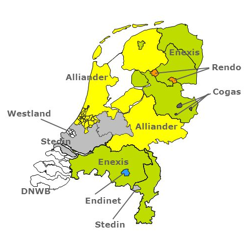

Elektriciteitsnetwerk
Onderstaande kaartlagen geven informatie over het elektriciteitsnetwerk in Nederland. Onderaan deze pagina staan links met meer informatie.
Hoogspanningsnetwerk
Deze kaartlaag toont het hoogspanningsnetwerk boven 50 kV. De data is afkomstig van www.hoogspanningsnet.com.
Netbeheerdergebieden
De verzorgingsgebieden van de verschillende netbeheerders voor elektriciteit worden in deze kaartlaag weergegeven. Dit is open data van de netbeheerders.

Enexis open data
Enexis heeft assets in haar eigen verzorgingsgebied als open data beschikbaar gesteld. Het gaat hierbij om de volgende assets:
- Middenspanningskabels
- Laagspanningskabels
- Aansluitkabels
- Elektriciteitsaansluitingen
- Openbare verlichting
Windturbines
Bosch & Van Rijn heeft alle windturbines in Nederland op de kaart gezet en is beschikbaar via www.windstats.nl
Oplaadpalen
Deze kaartlaag toont alle locaties van oplaadpalen in Nederland. De data is afkomstig van www.oplaadpalen.nl.
Meer informatie